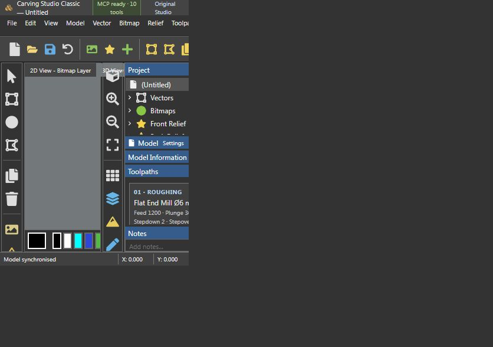

Carving Studio Classic + MCP
วาดเวกเตอร์ สร้างลายนูน และพรีวิวทางเดินดอกกัด พร้อมเชื่อม AI ผ่าน MCP
โปรแกรมนี้รันผ่าน Node.js ในเครื่อง ปุ่มด้านล่างเปิดโปรแกรมที่กำลังทำงานอยู่ หากยังไม่ได้ติดตั้ง ให้ทำตามขั้นตอนติดตั้งก่อน
Classic + MCP
หน้าตาแนว ArtCAM มุมมอง 2D/3D ลายนูนจากเวกเตอร์ และพรีวิว End Mill / Ball Nose พร้อม MCP 10 คำสั่ง
เปิด Classic ในเครื่อง →Original Studio
หน้าจอรุ่นแรกที่เน้นขั้นตอนทำงานง่าย เก็บแยกไว้สำหรับใช้งานและเปรียบเทียบ
เปิด Original ในเครื่อง →ติดตั้งครั้งแรก
- ติดตั้ง Node.js 22 ขึ้นไปและ npm
- ดาวน์โหลด CNC Tools และแตก ZIP
- เข้าโฟลเดอร์
carving-studioแล้วเปิดSetup.cmd - เปิด
Start-ArtCAM-Classic.cmdหรือStart-Carving-Studio.cmdจากนั้นใช้ปุ่มเปิดโปรแกรมด้านบนได้
หรือเปิดเทอร์มินัลในโฟลเดอร์ carving-studio แล้วรัน:
npm ci --prefix artcam-classic npm --prefix artcam-classic run dev
คู่มือทั้งหมดและการเชื่อม MCP กับ AI →
ตัวอย่างลายนูนไทยและเครื่องมือกัด
